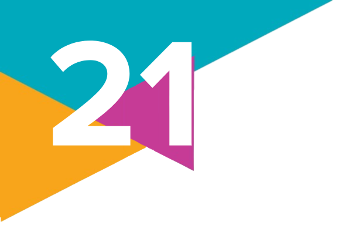

1.
Leia o trecho da reportagem e responda ao que se pede.
Katu é indígena urbana, ou seja, nasceu na cidade. Ela estudou em escola pública e conta que foi com base em sua experiência que criou a campanha sobre o Dia do Índio nas escolas.
"A escola sempre reforçou o estereótipo do indiozinho pelado e selvagem. A professora dava um desenho do índio que só usava uma folhinha pra cobrir as genitais, pintávamos o desenho, fazíamos cocar de papel e quando colocavam na minha cabeça diziam: 'Você é índia selvagem' e batiam na boca. Nunca vi a escola falar a verdade sobre nós", diz ela.
Katu diz que isso ainda não mudou. "Na antiga escola da minha filha, o Dia do Índio ainda está lá, com o cocar de papel, música da Xuxa e pipoca. Uma vez fui buscar minha filha na escola e ela falou para a amiguinha que somos indígenas. A amiguinha respondeu que não, pois, no Dia do Índio, a professora falou que eles moram na oca, no meio do mato e comem mandioca", conta.
a) De acordo com o que você estudou neste capítulo, qual é o motivo e a importância da mudança de nomenclatura de "Dia do Índio" para "Dia dos Povos Indígenas" ocorrida em 2022?
b) Você experienciou atividades parecidas com as descritas na reportagem na sua vida escolar? Como elas ajudaram a construir a imagem que você tem dos indígenas brasileiros?
c) Quais ações poderiam ser realizadas nas escolas para evitar os estereótipos descritos por Katu?
Katu é indígena urbana, ou seja, nasceu na cidade. Ela estudou em escola pública e conta que foi com base em sua experiência que criou a campanha sobre o Dia do Índio nas escolas.
"A escola sempre reforçou o estereótipo do indiozinho pelado e selvagem. A professora dava um desenho do índio que só usava uma folhinha pra cobrir as genitais, pintávamos o desenho, fazíamos cocar de papel e quando colocavam na minha cabeça diziam: 'Você é índia selvagem' e batiam na boca. Nunca vi a escola falar a verdade sobre nós", diz ela.
Katu diz que isso ainda não mudou. "Na antiga escola da minha filha, o Dia do Índio ainda está lá, com o cocar de papel, música da Xuxa e pipoca. Uma vez fui buscar minha filha na escola e ela falou para a amiguinha que somos indígenas. A amiguinha respondeu que não, pois, no Dia do Índio, a professora falou que eles moram na oca, no meio do mato e comem mandioca", conta.
VIEIRA, B. M. Indígenas lançam campanha contra estereótipos para o Dia do Índio: 'Não precisamos de outras pessoas para nos definirem'. G1, São Paulo, 19 abr. 2019. Disponível em: https://g1.globo.com/sp/sao-paulo/noticia/2019/04/19/indigenas-lancam-campanha-contra-estereotipos-para-o-dia-do-indio-nao-precisamos-de-outras-pessoas-para-nos-definirem.ghtml. Acesso em: 19 set. 2024.
a) De acordo com o que você estudou neste capítulo, qual é o motivo e a importância da mudança de nomenclatura de "Dia do Índio" para "Dia dos Povos Indígenas" ocorrida em 2022?
b) Você experienciou atividades parecidas com as descritas na reportagem na sua vida escolar? Como elas ajudaram a construir a imagem que você tem dos indígenas brasileiros?
c) Quais ações poderiam ser realizadas nas escolas para evitar os estereótipos descritos por Katu?
2.
(Enem – 2023)
"Há uma década, Alter (PA) e Santarém (PA) resgatam o idioma de nheengatu – a língua mais falada no Brasil e proibida em 1758 pela Coroa portuguesa – por meio do ensino em 47 escolas. Uma delas é a Escola Indígena Antônio de Sousa Pedroso, mais conhecida como Escola Borari. A região é hoje repleta de mestres nativos de nheengatu. Nhe'eng significa "língua", e "boa" é a tradução de katu. Daí o nheengatu ou nhengatu (ou língua geral), criado no século 16 pelos jesuítas a partir do tupi e criminalizado no século 18 por um decreto do Marquês de Pombal."
O ensino da língua mencionada no texto tem como objetivo a
a) resolução dos conflitos legais.
b) estetização do dialeto regional.
c) gramatização do vocabulário local.
d) valorização da tradição cultural.
e) reabilitação das autoridades políticas.
"Há uma década, Alter (PA) e Santarém (PA) resgatam o idioma de nheengatu – a língua mais falada no Brasil e proibida em 1758 pela Coroa portuguesa – por meio do ensino em 47 escolas. Uma delas é a Escola Indígena Antônio de Sousa Pedroso, mais conhecida como Escola Borari. A região é hoje repleta de mestres nativos de nheengatu. Nhe'eng significa "língua", e "boa" é a tradução de katu. Daí o nheengatu ou nhengatu (ou língua geral), criado no século 16 pelos jesuítas a partir do tupi e criminalizado no século 18 por um decreto do Marquês de Pombal."
LEMOS, S. Indígena ensina língua proibida pelos portugueses na paradisíaca Alter (PA). Disponível em: https://tab.uol.com.br. Acesso em: 11 nov. 2021 (adaptado).
O ensino da língua mencionada no texto tem como objetivo a
a) resolução dos conflitos legais.
b) estetização do dialeto regional.
c) gramatização do vocabulário local.
d) valorização da tradição cultural.
e) reabilitação das autoridades políticas.
3.
Reúnam-se em duplas para realizar uma pesquisa sobre as populações indígenas do estado onde vocês residem. Acessem a página do IBGE (https://censo2022.ibge.gov.br/panorama/indicadores.html. Acesso em: 19 set. 2024) e observem as instruções a seguir. Na categoria "tema", selecionem a opção "indígenas"; na categoria "local", selecionem o estado onde vocês residem; na categoria "comparação", selecionem "Brasil" ou outro estado da região onde vocês residem para estabelecer uma comparação. Analisem os dados disponibilizados na página e respondam às questões a seguir.
a) O que se pode dizer sobre o número de indígenas no seu estado em relação ao número de indígenas no Brasil em 2010 e 2022? O número de indígenas no seu estado representa qual percentual da população indígena brasileira?
b) Há variações significativas entre a pirâmide etária, a população não alfabetizada e a população residente em terras indígenas do seu estado e do Brasil em geral?
a) O que se pode dizer sobre o número de indígenas no seu estado em relação ao número de indígenas no Brasil em 2010 e 2022? O número de indígenas no seu estado representa qual percentual da população indígena brasileira?
b) Há variações significativas entre a pirâmide etária, a população não alfabetizada e a população residente em terras indígenas do seu estado e do Brasil em geral?
4.
Faça uma pesquisa na internet sobre a existência de conflitos envolvendo a ocupação ou a demarcação de terras indígenas no estado onde você reside. Selecione um desses conflitos e explique por que eles ocorrem, quem são os envolvidos e quais têm sido as consequências para a população indígena local.
5.
Qual das seguintes alternativas NÃO representa um equívoco comum sobre os povos indígenas?
a) A ideia de que os indígenas formam um grupo homogêneo com a mesma cultura e língua.
b) A visão de que as culturas indígenas são "atrasadas" e "primitivas".
c) A crença de que os indígenas pertencem apenas ao passado do Brasil.
d) A percepção de que os indígenas contribuíram significativamente para a formação da cultura brasileira.
e) A representação estereotipada do indígena como alguém que vive isolado na floresta.
a) A ideia de que os indígenas formam um grupo homogêneo com a mesma cultura e língua.
b) A visão de que as culturas indígenas são "atrasadas" e "primitivas".
c) A crença de que os indígenas pertencem apenas ao passado do Brasil.
d) A percepção de que os indígenas contribuíram significativamente para a formação da cultura brasileira.
e) A representação estereotipada do indígena como alguém que vive isolado na floresta.